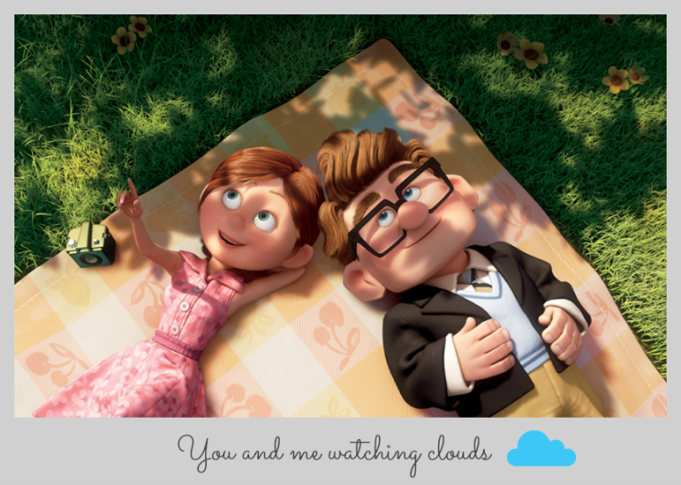
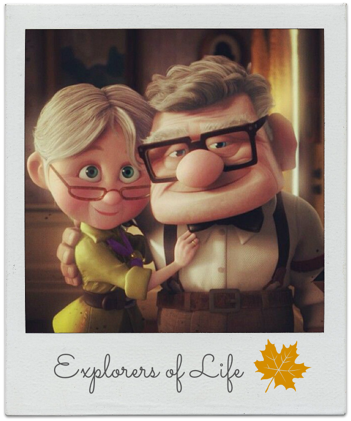
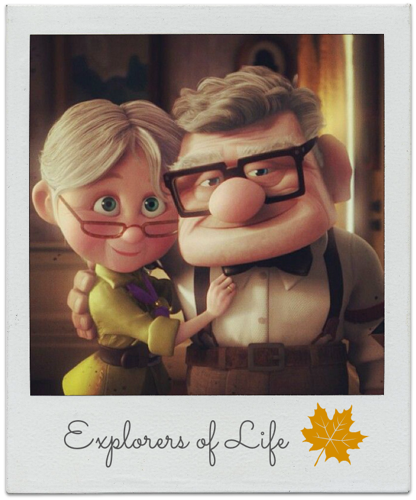

Momentos de la familia
Los domingos de picnic en la colina siempre fueron mi momento favorito de la semana. La colina pareció hacerse más empinada con los años e incluso tú ya conseguías llegar a la sombra de nuestro árbol antes que yo. Allí hablábamos durante horas, mirando
el cielo, buscando formas en las nubes… ¿Recuerdas que nuestra nube favorita tenía nombre y se llamaba Claude?
Pasaron los años, cuando envejecen, Ellie se enferma y fallece.
Carl decide dar un
giro a su vida y emprender con sus hijos a la aventura que siempre había querido llevar a cabo junto a su mujer. Así, decide atar un gran número de globos a su casa para poder surcar los cielos y llegar hasta Sudamérica, concretamente
a Paradise Falls, lugar que conoce gracias a su gran devoción por el explorador Charles Muntz. Los objetivos de Carl parecen claros: solo desea llevar la vida que habría llevado si su mujer no hubiese fallecido.
Carta de Ellie a Carl antes de fallecer
Mi príncipe azul no tiene castillo, ni caballo, ni lleva capa sino que lleva gafas, pajarita, tirantes y una chapa de insignia de explorador siempre en la solapa de su chaqueta. Ningún otro príncipe podría haberme hecho más feliz.
Vivir la vida junto a ti ha sido la mayor de las aventuras. Te quiere, Ellie P.D. Haz una cruz con el corazón y prométeme que buscarás y vivirás nuevas aventuras. Todavía quedan páginas en blanco en mi libro… rellénalas tú por
los dos.

 
